Up to 8 guests Air conditioning
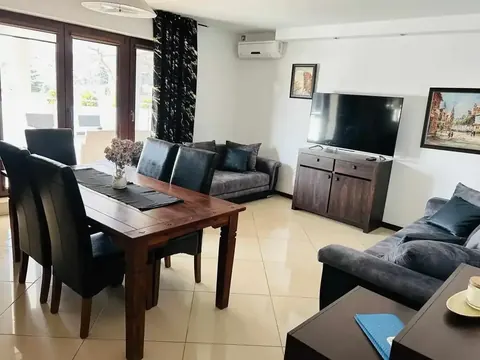
Zatoka Cydrowa offers year-round, air-conditioned apartments in Stegna on the Vistula Spit — in a pine forest, 1500 m from the beach. On site: sauna, hyperbaric chamber, kids' playroom and free parking.
Four air-conditioned apartments with their own terrace, a kitchenette, and two independent bathrooms in the larger units.

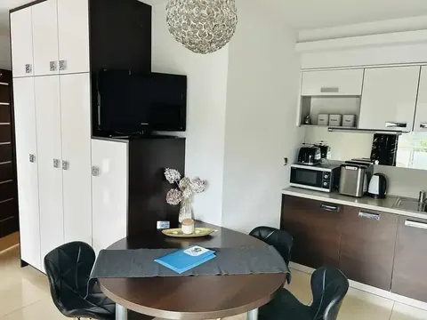
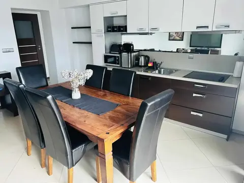
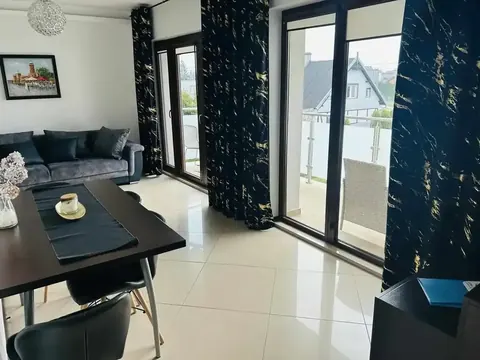
Intimate units available during the summer season — a great option for couples and small families looking for a simple, comfortable stay close to the sea.
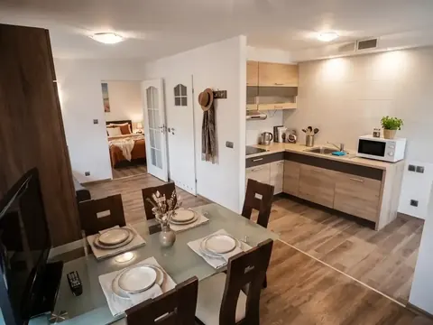
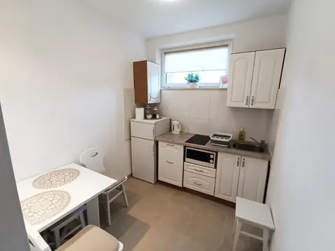
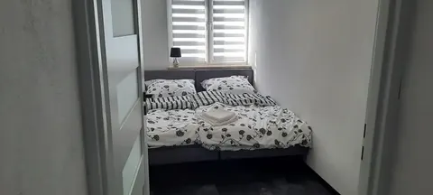
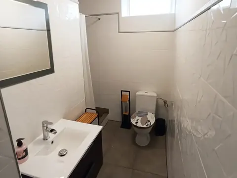
Extra summer rooms with private bathrooms — a good option for a simple, budget-friendly stay close to the sea.
Every summer room has its own bathroom — no sharing with other guests.
1500 m from the beach, at the same site as the rest of the Zatoka Cydrowa apartments.
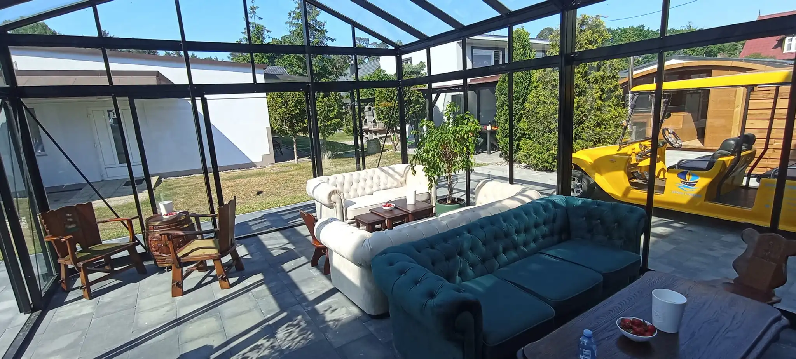
A glazed, covered veranda with comfortable sofas — a place to sit down with a coffee whatever the weather, right next to the lawn and greenery around the building.
Hyperbaric chamber, sauna and solarium — available outside the summer season too.
Supports the body's recovery and a faster return to form after exercise.

Relaxation after a day at the beach and support for muscle recovery.

Available on site, whatever the weather outside.
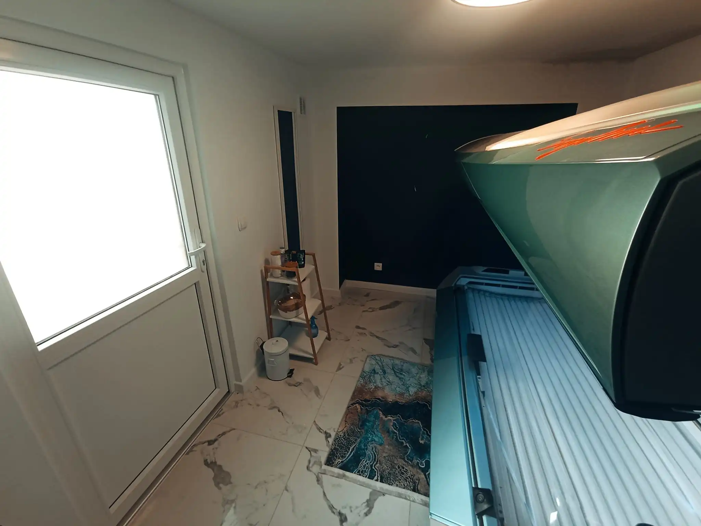
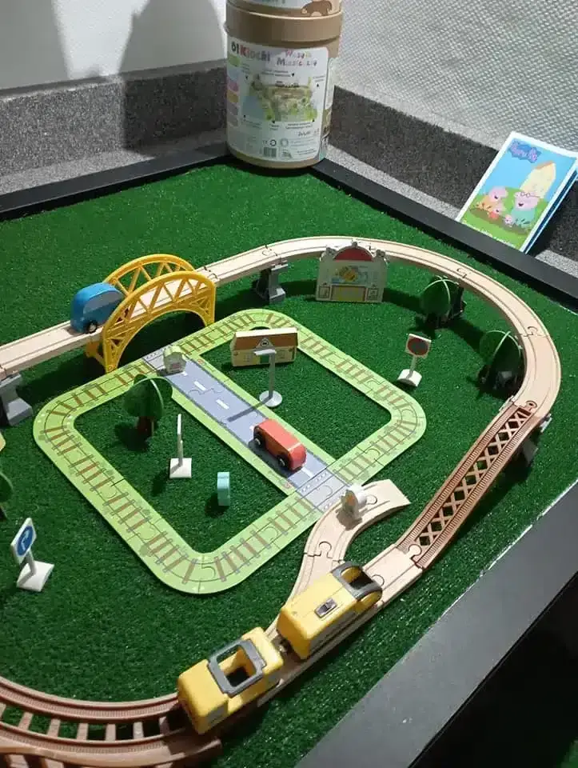
A garden playground and a cosy indoor playroom for rainy days — so kids always have something to do, whatever the weather.
An intimate, safe space for rainy days.
Kids play safely outdoors, while parents relax on the terrace.
The property sits in a quiet, forested part of Stegna — 1500 metres from the sandy Baltic beach, with easy access to the nearby attractions of the Żuławy region and the Vistula Spit.
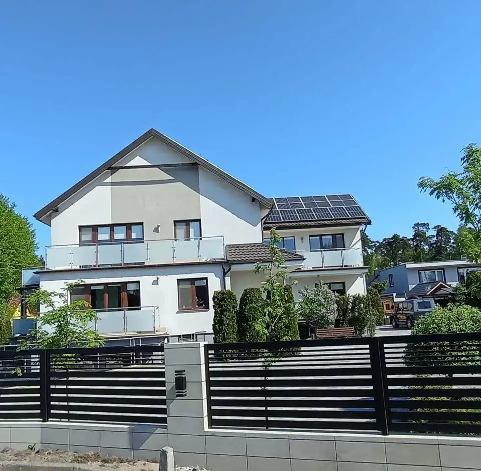
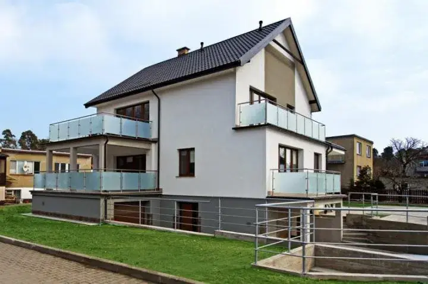
Real reviews from our guests on Facebook.
“Our stay at Zatoka Cydrowa was wonderful. The place is great, in a quiet spot perfect for relaxing. The hosts are fantastic — very warm and helpful, so you feel at home right away. A huge plus was relaxing in the jacuzzi, a great finishing touch to the holiday. I'd definitely recommend this place to anyone looking for peace, comfort and a lovely atmosphere. We'll definitely be back!”
“A tan from the solarium, a hot blast from the sauna — you instantly forget it's raining by the Baltic. Kids have their own paradise here — a pool table, cinema and playground mean everyone finds something for themselves. And all of it in an atmosphere that's genuinely warm, homely and full of kindness. Huge thanks to Klaudia and Łukasz — truly big-hearted people. Zatoka Cydrowa is definitely a place you want to come back to!”
“If you're looking for the perfect place to relax by the sea, Zatoka Cydrowa is a bullseye. Top-level relaxation, guaranteed. The rooms are spotless, tastefully furnished and very cosy. The owners and hosts are incredibly warm, helpful and wonderfully upbeat people who care about every detail and make you feel right at home. A fantastic place we'll be returning to again and again.”
About 1500 m on foot from the sandy beach in Stegna.
Yes, pets are welcome in all of our apartments.
Yes, there is a large, monitored and secure car park on site.
Yes, the hyperbaric chamber, sauna and solarium are available to guests all year round.
Yes, all four year-round apartments are air-conditioned.
Yes. The four air-conditioned year-round apartments and the wellness zone (sauna, hyperbaric chamber, solarium) are available all year. The summer apartments and holiday rooms are available during the summer season.
Apartment 1 sleeps up to 8 guests: 65 m², 3 rooms, 2 independent bathrooms and a terrace opening onto the garden. Apartment 3 sleeps up to 7 (65 m², 2 bathrooms).
Bookings are made only directly with the hosts, with no booking platforms: phone, SMS or WhatsApp +48 797 315 001, e-mail kontakt@zatokacydrowa.pl or Messenger on Facebook.
Prices are seasonal and depend on the dates, length of stay, number of guests and the apartment. We give a current quote on request — we reply daily between 8:00 and 20:00 at +48 797 315 001.
Address: Grunwaldzka 12, 82-103 Stegna, Poland. The property is about 15 minutes from the S7 expressway exit (Nowy Dwór Gdański), about 400 m from Stegna centre and about 20 km from Krynica Morska. On-site parking is free and monitored.
On site there is the cosy “Zatoczka Cydrowa” playroom and a fenced playground in the garden — attractions whatever the weather.
Check availability by phone — we'll answer every question about the apartments and your dates.